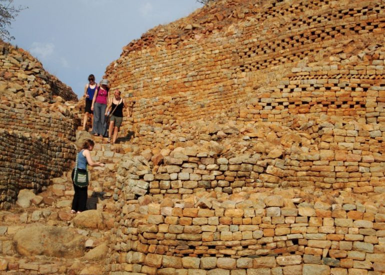
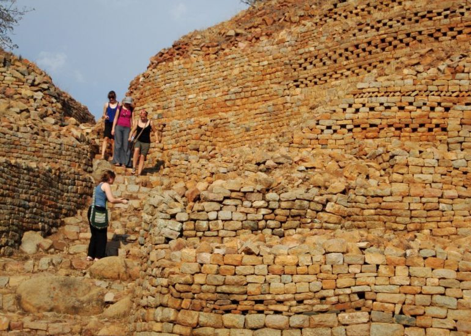

Khami Ruins — Zimbabwe
Half Day • Up to 8 Guests
After Great Zimbabwe was abandoned in the mid-16th century, Khami became the new capital of the Torwa dynasty. This UNESCO World Heritage Site features impressive dry-stone walls built into natural granite formations, showcasing advanced architectural techniques. As the second largest stone-built monument after Great Zimbabwe, discoveries of objects from China and Europe reveal that Khami was a major center for trade.
Highlights
- Second largest stone-built monument after Great Zimbabwe
- Former capital of the Torwa dynasty (16th century)
- Evidence of international trade with China and Europe
- Unique dry-stone architecture techniques
- UNESCO World Heritage Site
- Archaeological significance and ongoing excavations


 
